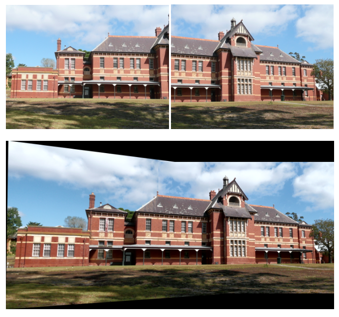

| Name: Jason Mohoney | NetID: mohoney2 | Email: mohoney2@wisc.edu |
| Name: Joshua Stephani | NetID: jstephani2 | Email: jstephani2@wisc.edu |
| Name: Max Vrany | NetID: mvrany | Email: mvrany@wisc.edu |
We are attempting to create a program which takes in a video as input and outputs a panoramic image. This script will operate by selecting frames and stitching these frames into a single image. It then matches the color and contrast of the images to create one cohesive, panoramic image.
The frames will be selected using optical flow techniques and sharpness analysis of the frames. The analysis must select enough images to avoid holes, but selecting too many images could result in artifacts, color issues, and greater computation time. Because of this, selecting which frames to use will likely be the most difficult and important part of the project.
The next part of this problem is stitching the images into one cohesive image. This will have to match objects in the images, stitch them together, then adjust the color and brightness of the image to make it look continuous.
Creating a panoramic image from a video is an important problem to solve because it allows for interesting content to be created from a video after it has been recorded. This problem is also interesting with its potential applications. It can be used to create a simple panorama, or even a fully spherical panorama. It can also be used to visualize the total angular coverage of a panning video. Another important aspect of this problem is analyzing the efficiency and effectiveness of panorama generators. It is important to determine how to produce a panorama with minimal computational power, yet still yield an acceptable result.
The Photomerge feature built into Adobe Photoshop uses Scale-Invariant Feature Transformation (SIFT) to identify common features in images. [1] SIFT is a widely used algorithm for feature recognition in images, with applications beyond image stitching. Those common features are then compared to find the best alignments. This may involve warping or further transformation of the image, which enhances the ability of the algorithm to match images with imperfect alignments or that were not captured with being merged in mind
Xiao-chun et al. [2] describes using feature recognition to determine the rate of panning of the video. The common Harris corner technique is used to identify prominent feature points of the video. Those points are grouped by establishing correspondences and using RANSAC to determine a small subset of points to use to determine a rate of motion. The panorama is then created with a bias toward background data in order to ensure a “pure panorama image” is produced.
Zhu et al. [3] describes a similar method, but with some differences to improve the efficiency. It combines the Harris corner technique with multiple constraint corner matching, while segmenting the image in order to ensure an even distribution (and no clusters) of detected corners. The corners are then filtered using techniques designed to reduce the number of iterations required for the RANSAC algorithm, greatly increasing its efficiency. The result is an “almost four times faster” panorama matching while producing accurate panoramas that match the visual expectations of a human viewer.
We are implementing the approach described by Zhu et al. [3] for panorama generation and will be tackling an open question mentioned in the paper. The question we would like to explore is how to handle camera movement and how much tolerance does the system have to such movements. Faster movements could cause blurring, reducing sharpness, and reduces the amount of overlap between adjacent frames. Using optical flow techniques we can handle camera movement by selecting frames that have an optimal amount of overlap. Additionally, we will vary the amount of overlap of frames and test the tolerance of our system. We believe that preprocessing the video and frame selection is a large part of the panorama problem and determining the system tolerance will aid us in determining the optimal preprocessing parameters and goals.
In Zhu et al. the system described has numerous parameters and thresholds. The values of some seemed dubious and may not be a one-size fits all solution for all images. Different values may be required for frames with varying characteristics for best performance. Doing parameter scan for will allow us to determine what impact image characteristics have on the parameters and allow us to adaptively set parameters based on the input image.
We will evaluate the performance of our system on two criteria under various scenarios in comparison to other methods such leveraging algorithms such as SIFT, SURF, FAST, and BRIEF. The first criteria is whether a panorama was generated or not. We can test if the panorama was successful stitched under various experimental parameters such as number of images, frame offset, and noise/blur. This will test the robustness of our system. The second criteria is that of speed. Under various experimental parameters, we can test how quickly our system generates panoramas to see if it can be applied to situations with real time demands.
We have built an implementation of the Zhu et al. method as a minimum viable product. This implementation takes left and right images as input, and outputs a stitched image that combines the two. Below is the result of our intermediate implementation. Post-processing of the output image is planned in future work to make each sub-image of the panorama consistent with each other (brightness, contrast, etc.). Additional examples are included at the end of the document.
| Task | Description | Date |
|---|---|---|
| Create Webpage | Add proposal and wiki. | 9/26 |
| Initialize Project | Plan necessary components, dependencies, tasks, and divide workloads | 10/1 |
| Input Preprocessing | Implement the preprocessing portion of the project. | 10/8 |
| Feature Extraction / Matching | Implement image feature extraction and match features in pairs. | 10/18 |
| Stitching | Implement the stitching of images from the matched feature pairs. | 10/29 |
| Minimum Viable Product | MVP should be able to take two images and stitch them together in one. | 10/31 |
| Code Cleanup / Additional Features | Perform testing, bug fixes, and code cleanup. Add the functionality for stitching more than two images. Tackle an open question. | 10/31 - 11/21 |
| Code Completion | Project code completion. | 11/21 |
| Results Gathering | Gather results based on different input videos / images. | 11/30 |
| Final Presentation | Present project and results to class. | 12/3 |
| Complete Webpage | Post project details on website along with results, code, etc... | 12/12 |
This is our planned project timeline. We have been on track with our original goals stated in the project proposal. Our next step is to expand the functionality of the current system to take video as an input. This will require preprocessing work in order to select frames. Once that is complete we can start performance testing our method on robustness and speed with other methods. If time, we would also like to further refine the self-adaptive parameter and threshold selection.
[1]https://forums.adobe.com/thread/360253
[2] Z. Xiao-chun, H. Ming-yi, Z. Xin-bo, F. Yan, A robust mosaic panorama technique for video, 2nd Int. Conf. on Computer Engineering and Technology (ICCET), Vol. 2, pp. V2-641-V2-644, 2010
[3] Minchen Zhu, Weizhi Wang, Binghan Liu, and Jingshan Huang, “Efficient video panoramic image stitching based on an improved selection of harris corners and a multiple-constraint corner matching,” PloS one, vol. 8, no. 12, pp. e81182, 2013.https://journals.plos.org/plosone/article/file?id=10.1371/journal.pone.0081182&type=printable